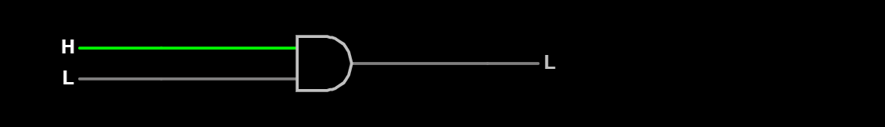

Name: Shreyas Newa
Date: 8-Oct-2022
I received assistance from: None
I assisted: None
H becomes L when I toggle the input.
Yes, the wire becomes gray.
The output becomes low voltage instead of high voltage.
The H becomes an L.
Yes, the front half of the wire becomes green.
The output becomes high voltage instead of low voltage.
The top L becomes an H.
The output remains as L.
The bottom H becomes an L.
When both inputs are activated, the output becomes high voltage.
I learned that and, or, xor and other gates play an important role in circuits and can change the output
I had trouble using the circuit page at the beginning, but I eventually got used to it
This experience could be improved by giving more detailed instructions on how the circuit page worked.
I have become more accustomed to think in a computer's mindset, which made the excersizes easier.